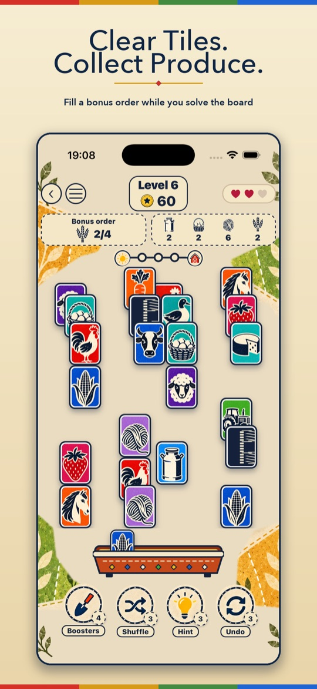
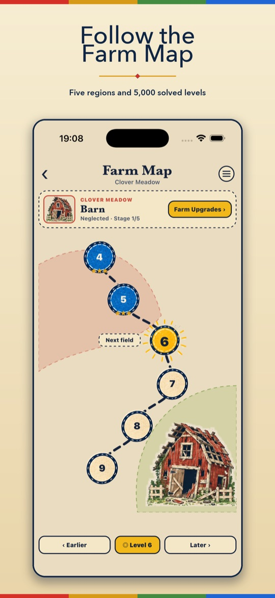
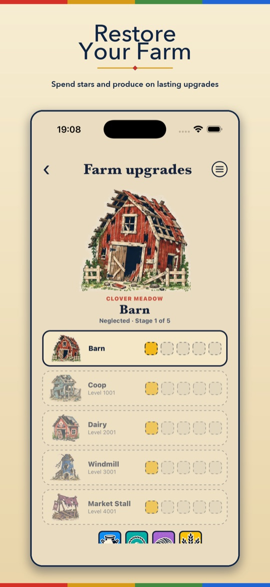

How it plays
- Match free tilesPair up identical tiles that are open on the left or right and not covered by another tile.
- Collect the harvestCows give milk, hens eggs, sheep wool and wheat grain. Each level may offer one optional order.
- Clear the boardRemove every tile to finish the level. Orders are a bonus and never stop you winning.
- Restore the farmSpend produce and stars on five run-down buildings and watch the farm come back to life.
Every board is dealt so it can be cleared.
Screenshots



What's inside
- 5,000 levels along a winding Farm Map, from gentle starter boards to towering stacks
- Five buildings to restore: barn, coop, dairy, windmill and market stall
- A three-slot holding tray to park an awkward tile for later
- Hint, Undo and Shuffle tools when you are stuck
- Board twists: seed tiles that ripen, a fox that steals, and hay bales that open
- Market Day: a free tool parcel to open every day
- Farm badges and rankings to collect and climb
- Plays offline; sign-in and cloud save are optional
Support & FAQs
I bought “Remove Ads”, coins or MooJong Pass but didn't get them
Make sure you are signed in to the same Apple Account or Google account you bought with, then open the Farm shop and tap Restore purchases. Remove Ads and MooJong Pass restore on any device. Coin packs are consumable, so if coins did not arrive, email us with the date of purchase and your store receipt and we will sort it out.
How do I get a refund?
Payments are handled by Apple or Google, so refunds are requested through them: on iOS at reportaproblem.apple.com, on Android from your Google Play order history.
How do I cancel MooJong Pass?
MooJong Pass is a monthly subscription managed by your store account. On iPhone and iPad open Settings → your name → Subscriptions. On Android open Google Play, then Payments & subscriptions → Subscriptions. Deleting the app does not cancel it.
Do I have to pay or watch ads to finish a level?
No. Every level, optional order and farm upgrade can be completed without a purchase or an advert. Optional “watch an ad” videos give a free booster and only play if you choose to watch one.
How do I change my ad privacy choices?
If your region requires consent (for example the UK and EU), open Settings → Ad privacy choices in the app. On iPhone you can also change tracking permission in Settings → Privacy & Security → Tracking.
Will my progress move to a new phone?
Yes, if you sign in. Signing in with Apple or Google is optional and saves your progress to the cloud, so you can pick it up on another device. Without an account, progress stays on your device.
How do I delete my account and data?
Open the Account screen in the app and tap Delete account, or follow the steps on the delete account page. That removes your account and cloud save.
What do the hearts mean?
Matching two visible tiles that do not match costs a heart. Face-down memory tiles give you a free peek first. If you run out of hearts, you can restart the level or return to the map.
I'm stuck on a level
Try the holding tray: press and hold a free tile to park it, which can free up a pair underneath. Hint shows a matching pair, Shuffle rearranges the remaining tiles, and Undo takes back your last move. How to play in the menu explains each tool and every board twist.
Still need help?
Email us with your device model, the level you are on and what happened, and we will help.